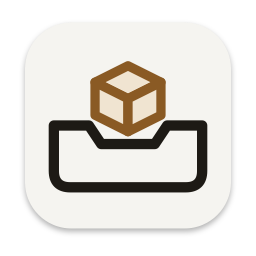

つみきトレイ
ドラッグの途中で、画面の端にひと休み
ダウンロード
macOS 15 以降・無料
キー
ドラッグを始めると、画面の右端（メニューで左にも）に棚が出ます。離れると端に小さな取っ手だけ残り、触れるとまた出ます。
棚の中
いくつかのファイルを一度に置くと1つの山にまとまり、右クリックの「ばらす」で分けられます。右クリックで、開く・コピーもできます（ファイルと画像は Finder で表示も）。
守り
- 元のファイルは動かさない置くのは場所の控えだけ。取り出しはいつもコピーで、元を移動・削除しません。棚から消しても元は残ります
- 取り出したら棚から外す取り出した物は棚から消えます。残したいときはメニューの「取り出したら消す」をオフにします
- 元が動いても追いかける名前を変えても場所を移しても見つけます。消えたものは薄く表示します
- この Mac の中だけ文字・URL・画像はアプリの中にコピーして持ちます。外には送りません。アプリ自体は通信しません
はじめに
- 「アプリケーション」へ入れるzip はダブルクリックで開きます
- ダブルクリック確認が出たら「開く」を押します。メニューバーにアイコンが出ます
- ファイルをドラッグして試す画面の端に棚が出たら、そこで離します
許可の設定はいりません。いつも使うなら、メニューバーのアイコン →「ログイン時に開く」をオンにしてください。